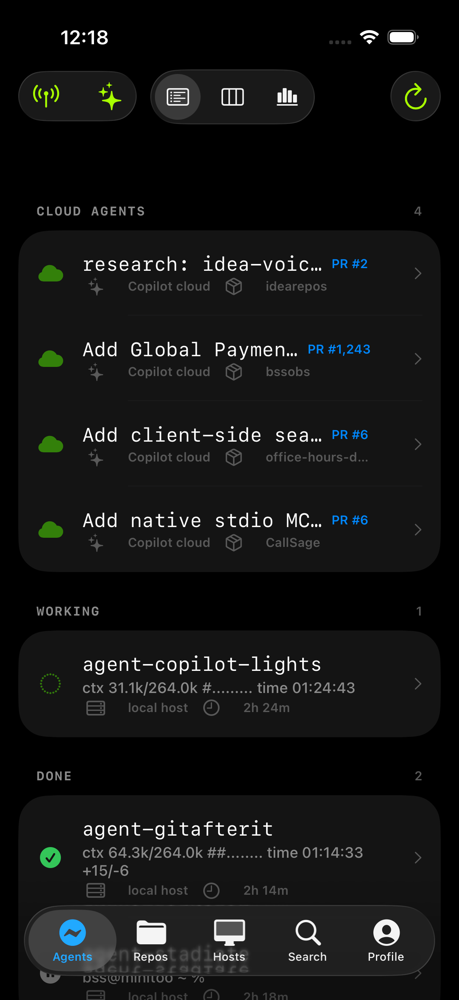
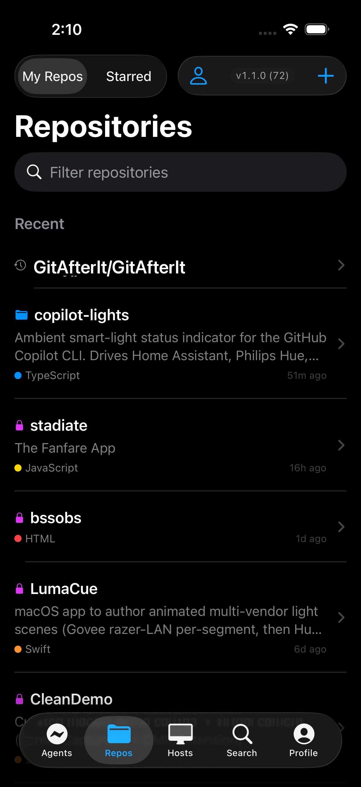
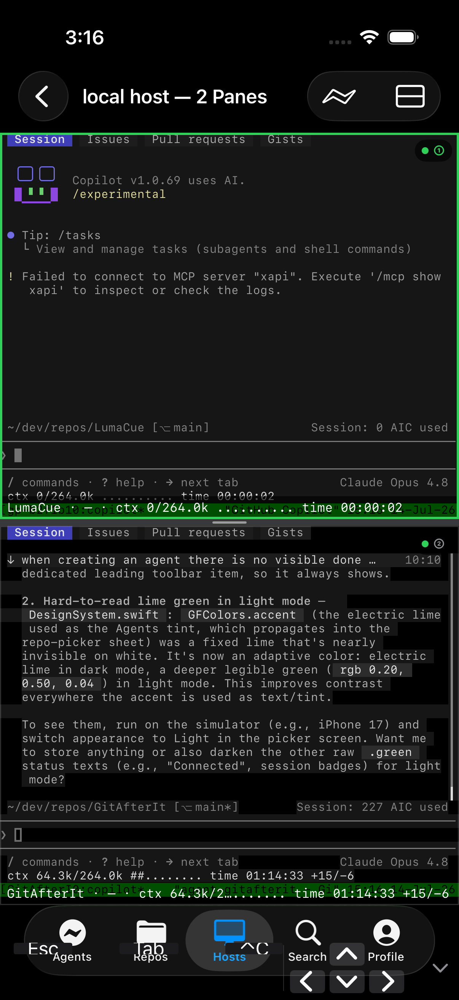
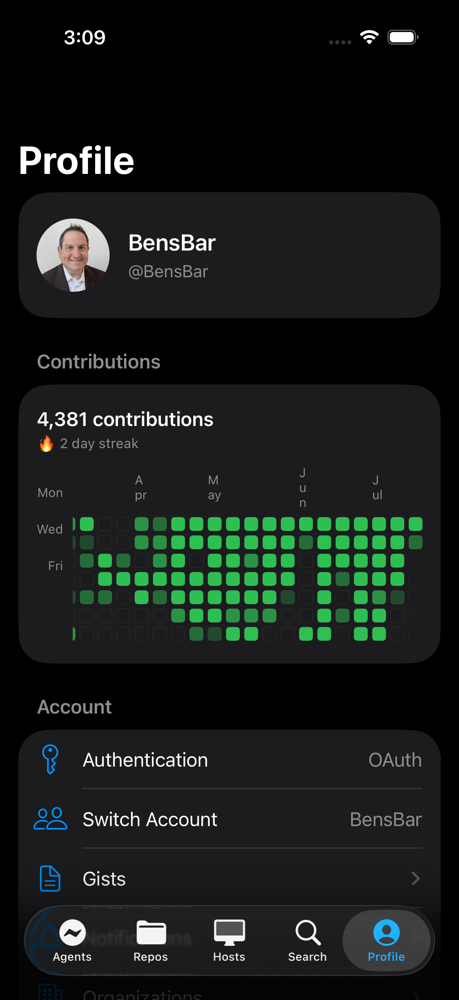

GitHub, and your agents,
in your pocket.
GitAfterIt is a native home for your repositories, pull requests, terminals, and Copilot coding agents — as simple as the Files app, as capable as your desktop.

Works with the GitHub app — not instead of it.
GitAfterIt is a companion, not a replacement. It signs in with your own GitHub account, hands off to the official GitHub app whenever that's the best place to finish a task, and adds the things that app doesn't have.
- ✦Opens in GitHub. Tap straight through to issues, pull requests, and profiles in the official GitHub app anytime.
- ✦Adds what's missing. Real SSH terminals and Copilot coding agents live here, alongside the GitHub workflows you already know.
- ✦Your GitHub, your way. Signs in with your own account — a companion to the app you use, never a substitute for it.
Everything you do on GitHub — designed for touch
No Git jargon, no compromises. Just the workflows you actually use, rebuilt to feel native on iOS.
Repos that feel native
Browse, edit, and move files like the Files app. Changes commit themselves with sensible messages — no staging, no jargon.
Command your agents
Launch and steer Copilot CLI coding agents from anywhere. A glance tells you who's working, who's done, and who needs you.
Real terminals
Full SSH sessions with a true terminal emulator and split panes. Your servers and dev boxes, right in your pocket.
Pull requests & review
Open, review, comment, and merge. Notifications, code search, and rich diffs are all built in.
Everywhere in iOS
Files app integration, Spotlight, widgets, Live Activities, and an Apple Watch companion keep your work close.
Secure by design
GitHub OAuth device flow, multi-account support, and credentials sealed in the Keychain. iOS 17+, 100% native SwiftUI.
Built for the way you work on the go
Swipe through a few of the places GitAfterIt takes you.



Your coding agents, on a leash you can see
- ✦Live status at a glance. Working, needs input, or done — read straight from each agent's own event stream, not guesswork.
- ✦Steer from anywhere. Kick off a Copilot CLI agent, answer its questions, and approve steps from your phone.
- ✦One place for every session. Local, SSH, and broadcast agents gathered into a single Mission Control.
- ✦Never miss a prompt. Get a notification the moment an agent flips to “needs input” while you're away.
Put GitHub in your pocket.
GitAfterIt is in active development. A TestFlight beta is on the way — check back soon.